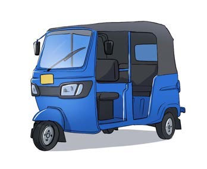
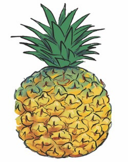
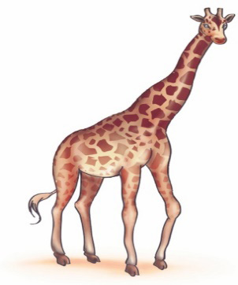
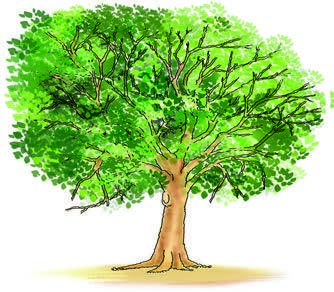
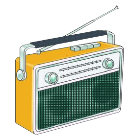
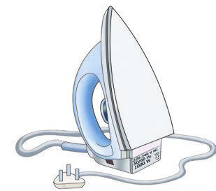

Tazama au Chunguza picha, kisha andika jina lake kwa mwandiko wa kuunga au Mwandiko wa Brelli; tumia eneo la kuandikia, kibodi au Breli.
3.

Bajaji ya bluu.Tazama au Chunguza picha, kisha andika jina lake kwa mwandiko wa kuunga au Mwandiko wa Brelli; tumia eneo la kuandikia, kibodi au Breli.

Bajaji ya bluu.Tazama au Chunguza picha, kisha andika jina lake kwa mwandiko wa kuunga au Mwandiko wa Brelli; tumia eneo la kuandikia, kibodi au Breli.

Nanasi lililoiva.Tazama au Chunguza picha, kisha andika jina lake kwa mwandiko wa kuunga au Mwandiko wa Brelli; tumia eneo la kuandikia, kibodi au Breli.

Twiga aliyesimama.Tazama au Chunguza picha, kisha andika jina lake kwa mwandiko wa kuunga au Mwandiko wa Brelli; tumia eneo la kuandikia, kibodi au Breli.

Mti mkubwa wenye majani mengi.Tazama au Chunguza picha, kisha andika jina lake kwa mwandiko wa kuunga au Mwandiko wa Brelli; tumia eneo la kuandikia, kibodi au Breli.
Tazama au Chunguza picha, kisha andika jina lake kwa mwandiko wa kuunga au Mwandiko wa Brelli; tumia eneo la kuandikia, kibodi au Breli.

Redio yenye antena.Tazama au Chunguza picha, kisha andika jina lake kwa mwandiko wa kuunga au Mwandiko wa Brelli; tumia eneo la kuandikia, kibodi au Breli.

Pasi ya umeme yenye waya.Tazama au Chunguza picha, kisha andika jina lake kwa mwandiko wa kuunga au Mwandiko wa Brelli; tumia eneo la kuandikia, kibodi au Breli.